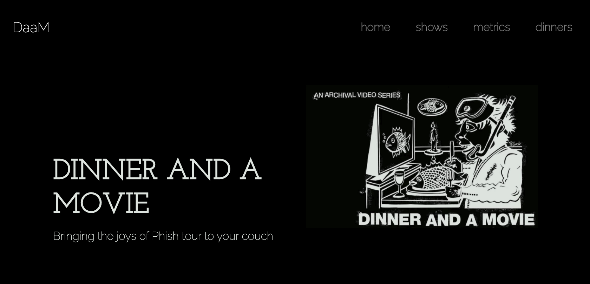

projects
test
tidyblocks
a block based coding language to learn R programming
shinybody
a custom shiny input boinding to click on body parts
mastering shiny solutions manual
the solution manual to Hadley Wickham's Mastering Shiny

dinner and a movie
a svelte application to look at Phish statistics
github calendar
a custom htmlwidget of a github calendar using d3.js
phishr
a wrapper package around the phish.net API
tidycdisc
a table generating GUI for clinical trial data
No matching items